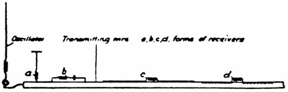

|
Tesla's Single Wire Circuit and Energy Shuttling Tesla's "single wire" circuit adroitly shuttled the current back and forth between two accumulators, instead of using one accumulator and thereby continually destroying the source dipole. Before one writes off Tesla as "modern" electrodynamicists are prone to do, one should first see Barrett's rigorous quaternion analysis (cited) of Tesla's patented circuits. Barrett showed that, if one increases the topology of the algebra so one can see what Tesla was actually doing, those circuits are shuttling energy (potential) around at will. In other words, Tesla could asymmetrically regauge the circuit and any part of it, as he desired. Further, the very best of tensor and vector electrodynamics analysis will not even see it. So the Old Master did indeed have a few tricks up his sleeve that modern electrodynamicists have not yet learned. You know, like how to build an overunity power circuit. (For further discussion - see Glossary reference on Resonance) Barrett — one of the great electrodynamicists of our present day — went on to adapt Tesla's method and even file a patent using that improvement and adaptation. We cite the patent in the references, and also Barrett's remarkable analysis. There's certainly sufficient in Barrett's excellent paper to keep you busy, if you wish further really technical theory.
|
excerpted from
"ELECTRICAL EXPERIMENTER"
May, 1919
The True Wireless
By NIKOLA TESLA

Granted, then, that an economic system of power transmission thru a single wire is practicable, the question arises how to collect the energy in the receivers. With this object attention is called to Fig. 5, in which a conductor is shown excited by an oscillator joined to it at one end. Evidently, as the periodic impulses pass thru the wire, differences of potential will be created along the same as well as at right angles to it in the surrounding medium and either of these may be usefully applied. Thus at a, a circuit comprising an inductance and capacity is resonantly excited in the transverse, and at b, in the longitudinal sense. At c, energy is collected in a circuit parallel to the conductor but not in contact with it, and again at d, in a circuit which is partly sunk into the conductor and may be, or not, electrically connected to the same. It is important to keep these typical dispositions in mind, for however the distant actions of the oscillator might be modified thru the immense extent of the globe the principles involved are the same.
|